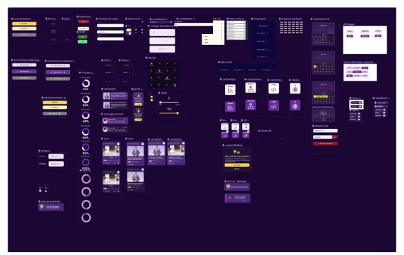
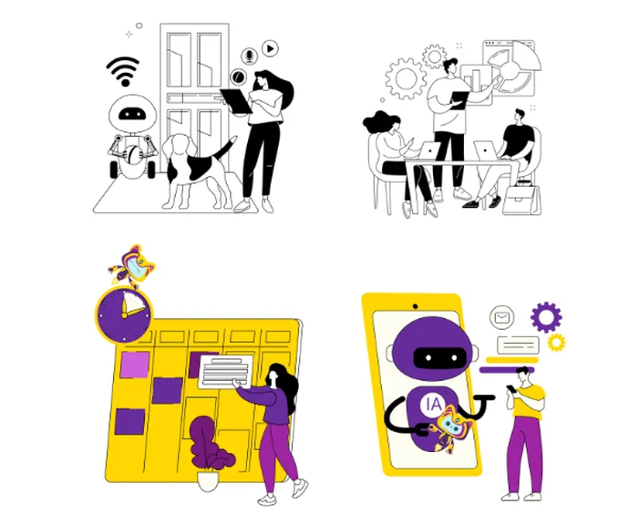

Cadrage
- ProblèmeLes formateurs freelance jonglent avec plusieurs agendas, se sentent isolés et perdent du temps sur des tâches répétitives ; les organismes de formation manquent de visibilité sur leurs disponibilités.
- Ce que j’ai faitUn cycle de design thinking complet à trois : entretiens avec 8 formateurs, personas, parcours utilisateur, benchmark, story mapping, wireframes, design system, illustrations et tests d'utilisabilité.
- ImpactUne application mobile pour les formateurs et une version desktop pour les organismes : un agenda synchronisé, une communauté de formateurs et un assistant IA, Sphérito.
Contexte
Contexte et question

Pendant le bootcamp UX/UI de Docaposte, nous avons conçu une application qui met en relation les organismes de formation en technologie et les formateurs qu'ils souhaitent recruter. Elle propose deux profils d'accès, un pour les organismes et un pour les formateurs, chacun avec son tableau de bord et ses fonctionnalités.
Cible : les formateurs freelance et les organismes de formation.
Comment créer un espace simple et intuitif où formateurs et organismes de formation se trouvent et suivent leurs missions ?
Proposition de valeur : une mise en relation plus large entre formateurs, et un moyen simple de suivre leurs tâches.
Méthode
Approche et méthodologie
Nous avons suivi un processus de design thinking sur 12 semaines : 8 semaines d'UX, puis 4 semaines d'UI.
| Phase | Méthodes | Quand |
|---|---|---|
| Empathie | Recherche utilisateur, questionnaire, insights | Semaines 1–3 |
| Définition | Personas, parcours utilisateur, story mapping, définition du problème | Semaines 2–5 |
| Idéation | Benchmark, architecture de l'information, brainstorming, Crazy 8, user flow, MVP | Semaines 5–8 |
| Prototype | Wireframes, UI kit, design system, prototype | Semaines 9–11 |
| Test | Tests d'utilisabilité et améliorations | Semaines 11–12 |
- 8formateurs interrogés (5 femmes, 3 hommes)
- 2personas
- 3plateformes analysées
- 5fonctionnalités dans le MVP
Story mapping et MVP
Le story mapping nous a aidés à organiser et prioriser les user stories. Le MVP devait contenir au minimum :
- L'onboarding
- Un profil personnel
- La planification et l'emploi du temps
- Les notifications et messages
- Créer et publier une fiche de formation
Données
Personas et parcours utilisateur
Nous avons analysé les entretiens par thème (outils, formation et communauté, nouvelles technologies), côté formateurs et côté organismes, puis construit deux personas.
Persona 1
Lola, 37 ans, formatrice freelance
Formatrice en design thinking depuis 10 ans, auto-entrepreneuse. Elle veut faire évoluer ses compétences et mieux organiser son travail malgré des plannings instables.
- Des plannings de formation instables et des validations de dernière minute
- Les annulations et le nombre insuffisant de stagiaires
- Des outils dispersés, le manque de temps, aucun échange avec des collègues
Persona 2
Mélissa, 45 ans, responsable pédagogique
15 ans dans un organisme de formation. Elle veut un tableau de bord qui réunit les informations clés pour piloter la pédagogie au quotidien.
- Aucune visibilité sur le planning des formateurs
- Gérer les imprévus, entre distanciel et présentiel
- Aucun outil pour remplacer rapidement un formateur absent
Parcours utilisateur : gérer ses notifications

Lola attend un contrôle total sur ses notifications (les activer, les désactiver, couper le son), de voir d'un coup d'œil qui lui écrit, et un affichage clair. Un second parcours, accepter une demande, a montré le besoin de modèles de réponse.
Insights clés
Insights clés et benchmark
Insight 1 : Les formateurs se sentent isolés
Les formateurs freelance regrettent de ne pas pouvoir échanger leurs bonnes pratiques entre pairs.
- Preuve
- Entretiens · n = 8
- Décision
- Créer une communauté dédiée : partage, webinaires, bonnes pratiques
- Résultat
- Un espace communauté dans l'application
Insight 2 : Un seul agenda pour tout, sans exposer sa vie privée
Les activités sont dispersées dans plusieurs outils, et les événements personnels doivent rester privés.
- Preuve
- Entretiens + personas
- Décision
- Un espace de travail modulable qui synchronise les agendas, avec des widgets
- Résultat
- Un planning synchronisé dans le MVP
Insight 3 : Les tâches récurrentes sont pénibles
Rédiger des fiches de formation et répondre aux e-mails prend du temps sur l'enseignement.
- Preuve
- Entretiens + parcours utilisateur
- Décision
- Un assistant d'IA générative intégré à l'application
- Résultat
- Sphérito, la mascotte IA
Benchmark
Nous avons comparé des plateformes de mise en relation plutôt que des outils de formation uniquement : Litmos, Superprof et Malt. Nous avons retenu la création de profil par étapes, un tableau de bord synthétique, la gamification de la progression, des catégories de filtres et, pour une V2, la comparaison de profils dans le catalogue.
Solution
Solution, design system et application
La solution
- Un espace de travail modulable qui synchronise plusieurs agendas, avec des widgets pour rendre l'interface agréable.
- Une communauté pour partager des informations, organiser des webinaires et échanger les bonnes pratiques.
- Sphérito, une mascotte d'IA générative qui aide à rédiger les fiches de formation et les réponses aux e-mails.
Wireframes

Marque et design system
Le nom associe savoir et la sphère, symbole d'unité et de complétude. Le logo associe le bleu pour la confiance, le violet pour la créativité et le mauve pour l'harmonie, avec un effet néon pour l'énergie. Les titres sont en Gabarito et le texte en Sora. Le bleu est dédié aux organismes de formation et le violet aux formateurs ; le jaune signale les appels à l'action, le vert la validation et le rouge les alertes.

L'application mobile des formateurs est en mode sombre : moins de fatigue visuelle, plus adaptée à un usage le soir et plus économe en batterie sur les écrans OLED. La version desktop des organismes est en mode clair, plus adaptée aux grands écrans et aux environnements de bureau.
Illustrations et Sphérito
Nous avons dessiné chaque illustration dans Adobe Illustrator à partir d'images de référence de personnes en interaction, puis ajusté les couleurs à la charte et exporté le tout en SVG.


L'application

Ce que les tests d'utilisabilité ont montré
- Certaines zones cliquables étaient trop petites, et deux fois les utilisateurs se sont retrouvés bloqués sur un écran sans issue.
- Les écrans conçus à trois manquaient de cohérence visuelle : nous les avons réharmonisés en cours de projet.
- Faire tester leurs propres parcours aux formateurs a gardé l'équipe centrée sur les vrais besoins.
Rétrospective
Ce que j’ai appris et ce que je ferais autrement
- Mettre en place un design system dès le début d’un projet d’équipe : il garantit la cohérence et évite de refaire le travail.
- Garder les parcours aussi simples que possible ; l’affordance passe avant tout.
- Concevoir deux expériences, mobile en mode sombre pour les formateurs et desktop en mode clair pour les organismes, oblige à faire chaque choix pour un contexte d'usage, pas par goût.
- L’accessibilité totale est difficile à atteindre : il faut vérifier sans cesse que le produit fonctionne pour le plus grand nombre.